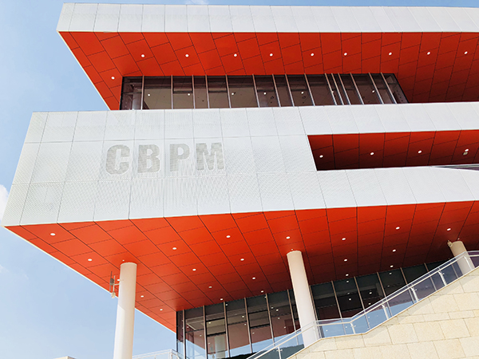
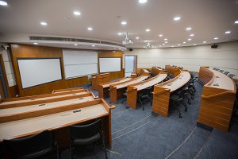
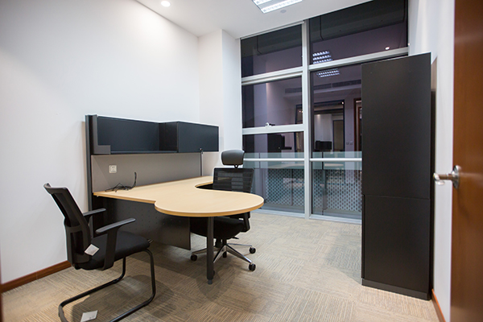

The architectural design of Wenzhou-Kean University campus seeks diverse changes, providing great space for
innovative campus design. The campus does not insist on unified coordination, but encourages buildings to
communicate and dialogue in diversity, and find ways and methods of balance and coordination.
Therefore, unlike other buildings on campus, the business school adds a bit of personality and vitality to
the Wenzhou-Kean University campus with its modern design style and bright color matching. At the same time,
the business school's facade color selection and large steps and other design elements echo the existing
campus buildings, forming communication and dialogue in diversified development.
Exterior
Lecture Hall
Office